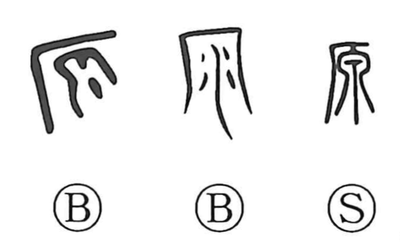

Explanation
In its earliest form, 原 is a pictograph of water spilling from a cliff (the cliff shown by 厂), the falling stream marking the headwaters of a mountain river. From this image it first meant “source, origin,” and by extension the “beginning” and “basis” of things. Its use for “field, plain” (as in 原野) arose by graphic substitution for an older character that depicted a ritual hunt on open grassland: 夂 signifies the descent of a deity, 田 the mesh of a hunting net, and 彖 an animal, forming a scene of prayer for hunting success held out on the steppe. Because such rites took place on the grassland (草原), that graph came to mean “field,” and in common writing 原 assumed that sense. To state “source” explicitly, a new water-sign form, 源, was then created with 氵 added to 原.